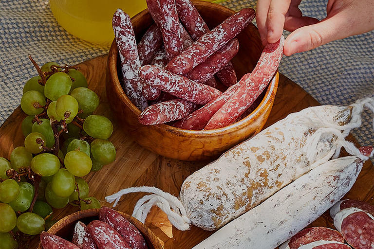

Servei · Seva
L'Ecogranja és l'espai on Salgot fa recerca per crear nous i millors embotits, al Parc Natural del Montseny. Aquí el bestiar gaudeix d'espais amplis i còmodes a l'aire lliure i una alimentació…